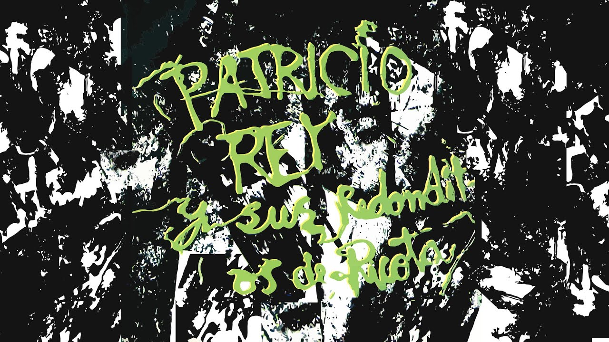
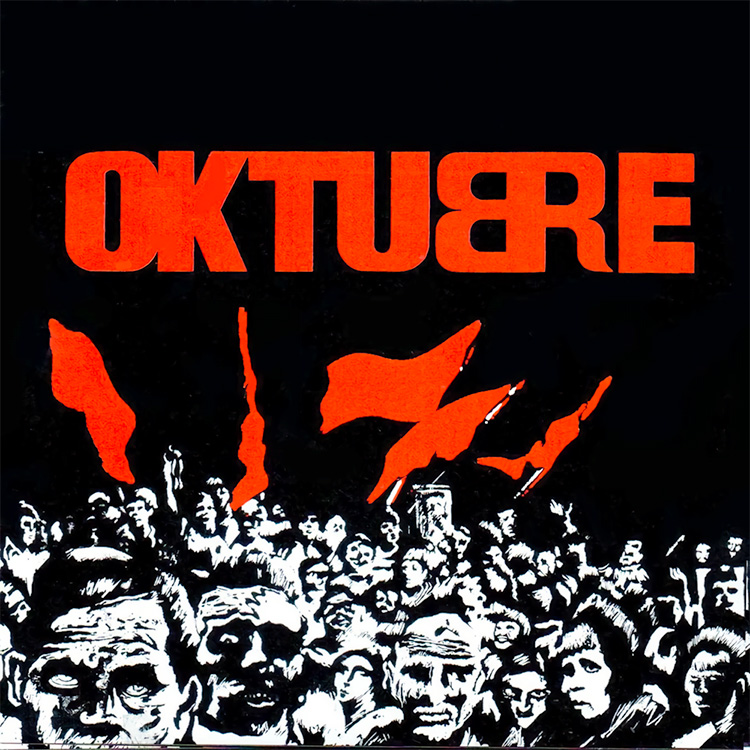
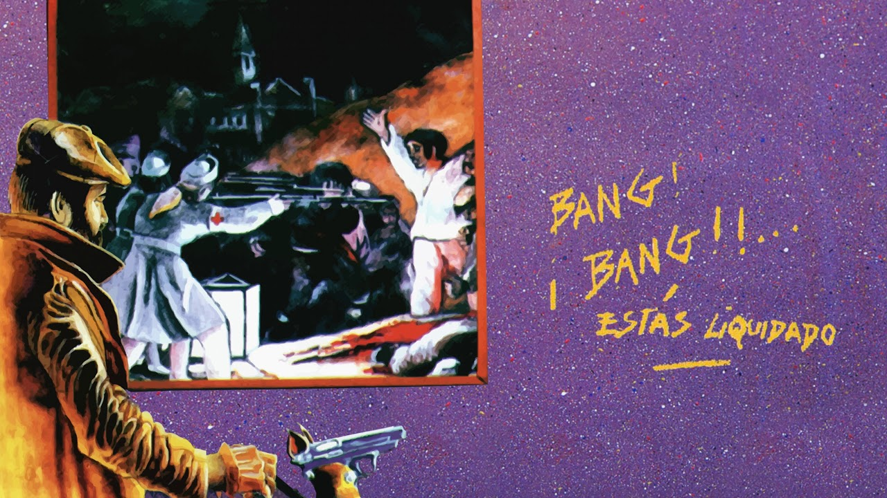
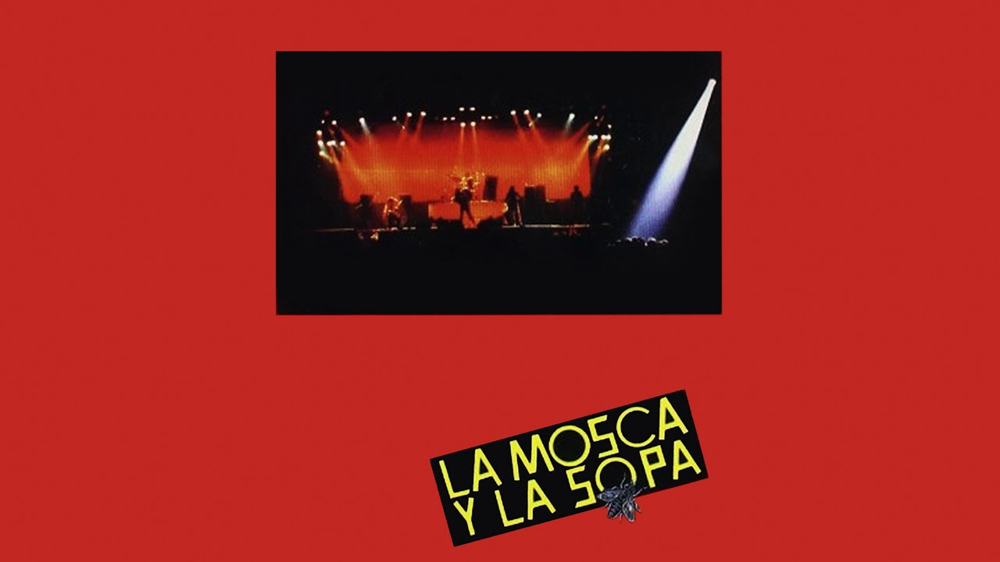
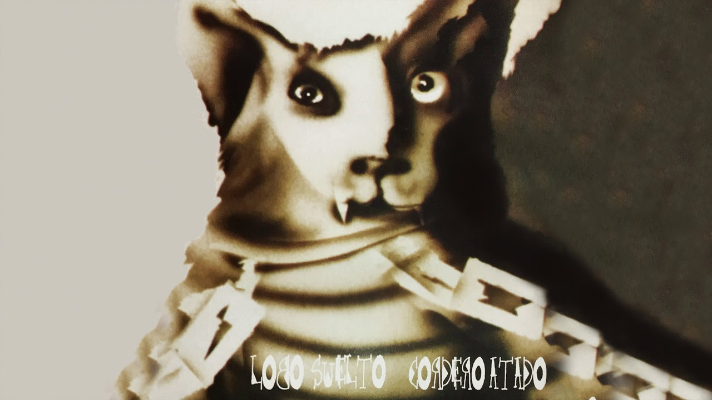
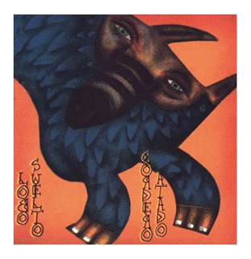
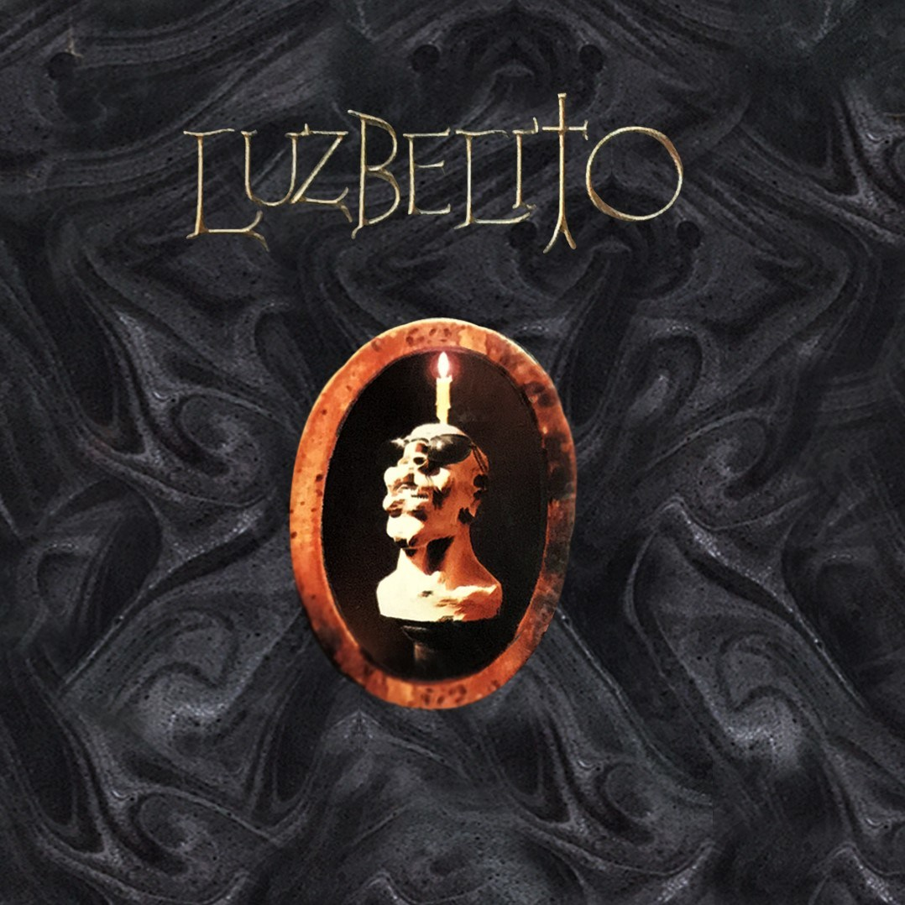
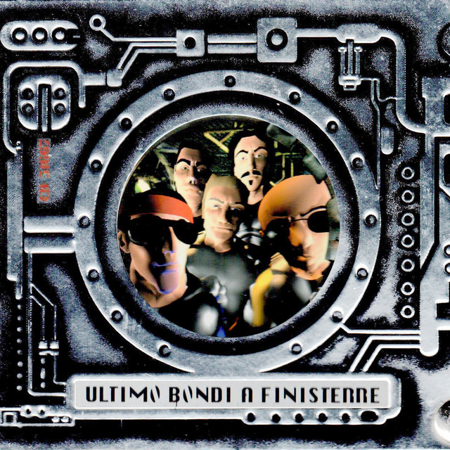
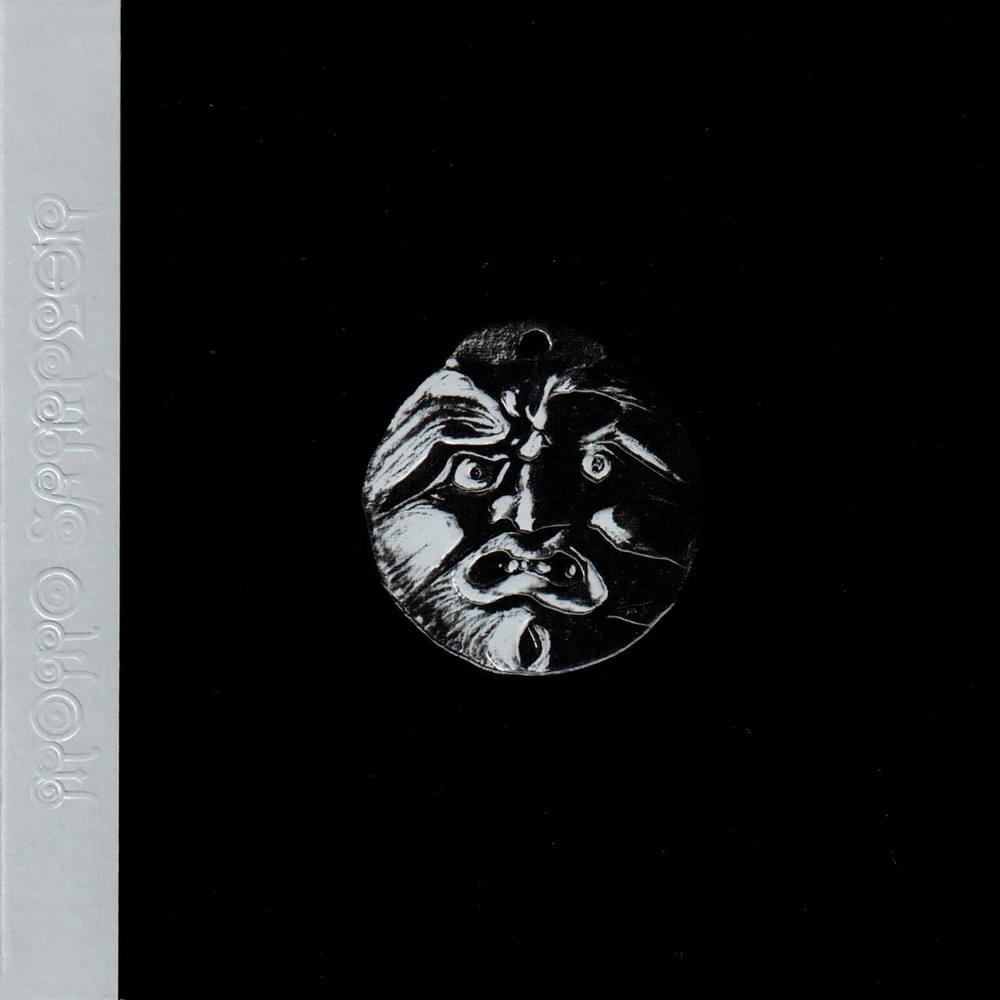

- Barbazul versus el amor letal.
- La bestia pop.
- Roto y mal parado.
- Pierre el vitricida.
- Unos pocos peligros sensatos.
- Yo no me cai del cielo.
- Te voy a atornillar.
- Superlogico.
- Ñam fri fruli fali fru.
- El inferno esta encantador esta noche.
- Criminal mambo.

- Fuegos de octubre.
- Preso en mi ciudad.
- Musica para pastillas.
- Semem-up
- Divina tv. Führer.
- Motor psico.
- Jijiji
- Cancion para naufragios.
- Ya nadie va a escuchar tu remera.

- Masacre en el puticlub.
- Noticias de ayer.
- Aquella solitaria vaca cubana.
- Todo preso es politico.
- Vencedores vencidos.
- Vamos las bandas.
- Ella debe estar tan linda.
- Todo un palo.

- Heroe del whisky.
- Rock para los dientes.
- La parabellum del buen psicopata.
- Un pacman en el Savoy.
- Nadie es perfecto.
- Esa estrella era mi lujo.
- Maldicion! va a ser un dia hermoso.
- Ropa sucia.
- Nuestro amo juega la esclavo.

- Toxi-Taxi.
- Fusilados por la Cruz Roja.
- Un poco de amor frances.
- Mi perro dinamita.
- Blues de la artilleria.
- Tarea fina.
- El pibe de los astilleros.
- Nueva Roma.
- Salando las heridas.
- Queso ruso.

- Invocacion.
- Rock para el negro Atila.
- Sorpresa de Shangai.
- Shopping disco-zen.
- Un angel para tu soledad.
- Buenas noticias.
- Susanita.
- Capricho magyar.
- Espejismo.
- Gran lady.
- La hija del fletero.
- El lobo caido.
- Sushi.

- Yo canibal.
- Ladron de mi cerebro.
- ¡Es hora de levantarse querido!
- Perdiendo el tiempo.
- Caña seca y un membrillo.
- Soga de Cain.
- Lavi-rap.
- El arte del buen comer.
- ¡Lobo ¿Estas?!
- Botija rapado.
- San Telmo.
- Etiqueta negra.

- Luzbelito y las Sirenas.
- Cruz Diablo!
- Ella baila con todos.
- Fanfarria del Cabrio.
- Nuotatori Professionisti.
- Blues de la libertad.
- La dicha no es una cosa alegre.
- Me matan limon!
- Rock yugular.
- Mariposa Pontiac.
- Juguetes perdidos.

- Las increibles andanzas del Capitan Buscapina.
- Estas frito angelito.
- El arbol del gran bonete.
- Gualicho.
- Pogo.
- Alien duce.
- La pequeña novia del carioca.
- Drogocop.
- Scaramanzia.
- Esto es to to todo amigos.

- El templo de Momo.
- Morta punto com.
- La murga de los renegados.
- Dr. Saturno.
- La murga de la virgencita.
- Pool, averna y papusa.
- Murga purga.
- Sheriff.
- Pensando como una acelga.
- Una piba con la remera..
- Rato molhado.